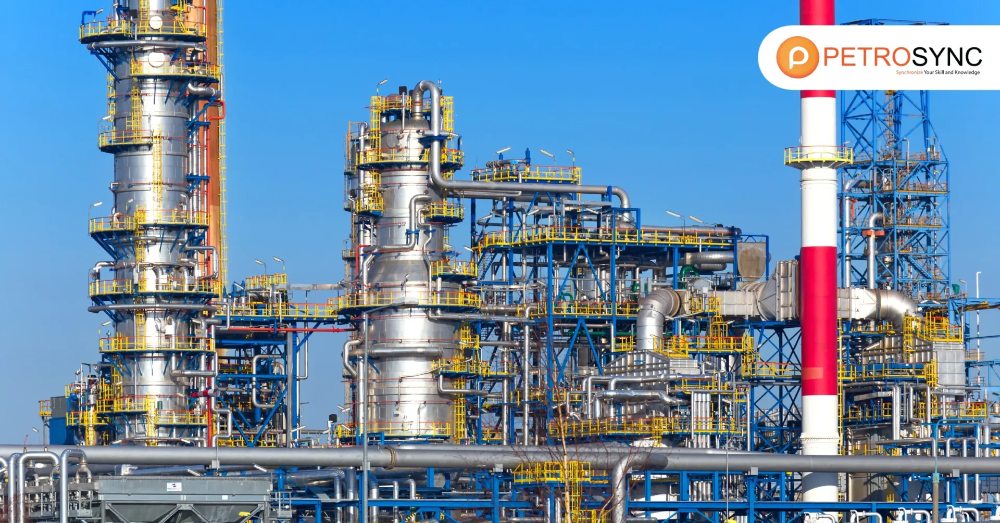

Project Overview
Located within a major petrochemical refinery complex in the Asia Pacific region, this project demanded a perimeter security system engineered to the highest standards of protection. As one of the region's critical energy infrastructure assets, the facility required a robust enclosure capable of deterring intrusion, resisting forced entry, and withstanding the extreme pressures associated with potential blast events.
Kestrel Metal was engaged to design, supply, and support the installation of a comprehensive high-security perimeter enclosure. The solution combined rigid welded mesh panels with blast-resistant barrier elements, creating a layered defence that met the strict security requirements set by the client's international security assessment framework and internal corporate standards.
The project called for materials engineered for maximum durability in a demanding industrial environment, including exposure to potential chemical release, extreme temperatures, and continuous operational activity. Long-term reliability, minimal maintenance, and a clearly defined security performance were non-negotiable requirements for the operator.

The Challenge
Petrochemical refineries present uniquely demanding security requirements that extend well beyond conventional perimeter fencing. These facilities house flammable, toxic, and high-value process streams, making them attractive targets for deliberate intrusion, sabotage, and theft. A security breach could result in catastrophic safety, environmental, and operational consequences.
The client required the perimeter system to conform to ISA-aligned security standards, which establish stringent parameters for barrier height, penetration resistance, and structural integrity. The security enclosure also had to function as a blast-deflection measure, resisting and redirecting the pressure waves generated by potential external detonations to protect critical plant assets and personnel.
Additionally, the installation had to proceed around active process areas without compromising the ongoing operation of the refinery. The construction zone involved significant ground congestion, buried utilities, and restricted access corridors, requiring a modular, prefabricated system that could be installed efficiently with minimal disruption to the facility's continuous operations.
Our Solution
Kestrel Metal supplied a comprehensive high-security perimeter enclosure combining engineered welded mesh panels with dedicated blast-resistant barrier structures. The welded mesh panels were manufactured with high-tensile steel wire and a rigid framing system, delivering a tamper-resistant barrier that resists cutting, climbing, and forced entry while maintaining clear sightlines for continuous surveillance and monitoring.
The blast-resistant perimeter barriers were designed as free-standing structural sections engineered to absorb and redirect blast energy, providing a secondary line of defence that protects critical infrastructure from the effects of external detonations. These barriers were integrated seamlessly with the welded mesh enclosure to form a continuous, unbroken security perimeter around the entire refinery complex.
All steel components were finished with a high-grade zinc-aluminium alloy coating combined with an additional polymer layer. This dual-coating system provides exceptional corrosion resistance, ensuring the security enclosure maintains its structural integrity and appearance for decades in the aggressive industrial environment of a petrochemical refinery, including exposure to atmospheric chemicals and aggressive coastal conditions.
The prefabricated, modular design allowed for rapid on-site assembly using minimal specialised equipment and limited manpower, enabling the enclosure to be installed in phases around active process units without disrupting production. The completed system delivers a perimeter that fully meets the client's ISA security standards while providing durable, low-maintenance protection for the refinery's critical assets.
Products

Blast-Resistant Welded Mesh Panel
- Rigid welded mesh panel engineered to resist cutting, climbing, and forced entry for high-security applications
- Designed to absorb and redirect blast energy, providing additional protection for critical infrastructure
- High-grade zinc-aluminium alloy and polymer coating for exceptional corrosion resistance in industrial environments
- Suitable for perimeter buildings, refineries, power plants, and other critical facilities

High-Security Perimeter Fencing
- Continuous perimeter fencing system engineered for tamper-resistant and intrusion-resistant protection
- Rigid, climb-resistant panel design that maintains clear sightlines for surveillance and detection
- Dual-coated steel construction for long-term durability against corrosion and environmental attack
- Modular prefabricated design for rapid, phased installation around active facility operations
Interested in high-security fencing for your petrochemical or energy facility? Contact our engineering team to discuss your specific security requirements. Request a Quote